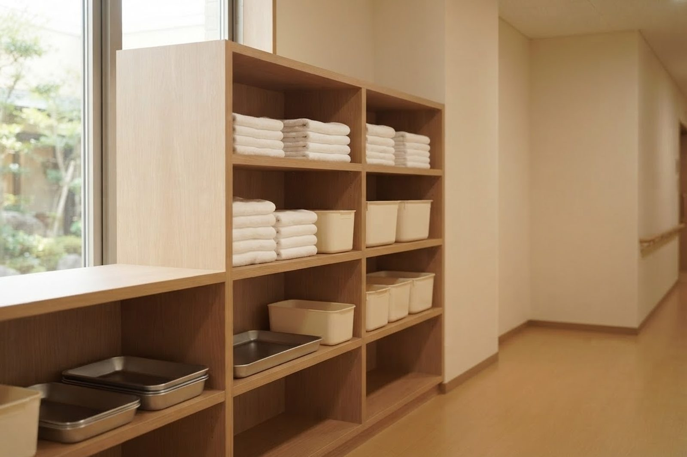

胃ろうや在宅酸素があっても、介護サービスを利用できますか？
A. 回答医療的なケアが必要なことを理由に、介護サービスの利用をあきらめる必要はありません。当法人は医院が母体で、訪問診療と、夜間を含めて医師に連絡できる体制を備えています。そのため、医療依存度の高い方をお受けした実績があります。ただし、状態やご希望によって適したサービスは変わります。まずはご相談ください。

受け入れた実績のある医療的ケア
これまでに当法人の事業所でお受けした医療的ケアです。すべての事業所・すべての時間帯で同じ対応ができるわけではないため、個別にご相談をお願いしています。
| 分類 | 内容 |
|---|---|
| 栄養 | 経腸栄養、胃ろうの管理（交換にも対応） |
| 呼吸 | 喀痰吸引、在宅酸素療法、気管切開後の管理、吸入 |
| 排泄 | ストマ（人工肛門）の管理、膀胱留置カテーテル |
| 皮膚・創傷 | 褥瘡（床ずれ）の処置、軽度の創処置（縫合を含む） |
| 与薬・注射 | インスリンの管理、点滴の管理、服薬の介助、点眼・座薬・軟膏の外用 |
| 終末期 | ターミナルケアにおける医療用麻薬の管理 |
| その他 | バイタルサインの測定と経過の観察 |
受け入れた実績のある疾患・状態
こうした状態の方をお受けしてきました
- 各種生活習慣病、心不全、ペースメーカーを装着されている方
- 脳卒中の後遺症がある方、パーキンソン病、てんかん、関節リウマチ
- 人工透析を受けている方、慢性腎臓病
- COPD（慢性閉塞性肺疾患）、間質性肺炎、肝硬変
- 末期の悪性腫瘍、緩和ケアが必要な方
- 認知症のある方、褥瘡のある方
ここに挙げていない状態についても、対応できるかどうかを個別に検討します。判断に迷われる場合ほど、早い段階でご相談いただけると調整しやすくなります。
事業所ごとの対応
| 事業所 | 対象となる方 | 主な対応内容 |
|---|---|---|
| サービス付き高齢者向け住宅 メディケアビレッジかしわじま | 要支援1・2、要介護1〜5 医療依存度が中〜高の方 退院直後の方／認知症のある方／おひとり暮らしの方 | 胃ろう、在宅酸素、看取りに対応した実績があります。訪問診療と、必要時の往診を行っています。 |
| 小規模多機能ホーム こはる日和 | 同上 | 通い・泊まり・訪問を組み合わせて利用できます。夜間の支援にも対応しています。 |
| デイサービスセンター こはる日和 | すべての介護度 退院直後の方／認知症のある方／おひとり暮らしの方 | リハビリテーション、口腔機能訓練、個別の生活動作の支援、入浴（機械浴・一般浴）。 |
| 訪問介護 こはる日和 いなだ医院の訪問看護・訪問リハビリ | 同上 | 各種の介助と生活支援、リハビリテーション、健康状態の観察。 |
| かしわじま 居宅介護支援センター | 要介護1〜5 ※要支援の方はご相談ください | 居宅サービス計画（ケアプラン）の作成、各事業所との連絡調整。 |
医療との連携でできること
- 訪問診療と、必要なときの往診：医師が定期的に関わるため、状態の変化を早めに把握できます。
- 夜間を含めて医師に連絡できる体制：急な変化があったときの相談先が決まっています。
- デイサービスの日に受診できます：デイサービスの終了時に医院へお送りし、通院される方は別室で診察します。待ち時間の短縮と、他の患者さんとの接触を減らすことにつながります。
- 看取りへの対応：ご本人とご家族の希望をうかがったうえで、住み慣れた場所で最期まで過ごせるよう支援しています。
ケアマネジャー・医療機関の方へ
受け入れの可否は、状態と時期によって変わります。次の内容をお伝えいただけると、その場でお答えできることが増えます。
- 要介護度と、現在の居所（ご自宅・入院中・他施設）
- 必要な医療的ケアの種類と、実施の頻度・時間帯
- ご本人とご家族のご希望、想定している利用開始の時期
- 主治医の情報と、退院予定日（入院中の場合）
ご相談の窓口は「かしわじま居宅介護支援センター（086-525-0600）」です。空室・空き枠の状況は日によって変わるため、お電話でご確認ください。
参考にした情報
本ページは一般的な情報提供を目的としています。掲載している定員・営業日・費用などは、公表されている事業所情報をもとにしたもので、最新の内容と異なる場合があります。ご利用にあたっては必ず重要事項説明書をご確認ください。ご不明な点はお電話（086-525-0600）にてお問い合わせください。
医療的ケアがあってご不安な場合も、まずはご相談ください。
📞 086-525-0600最終更新：2026年8月26日